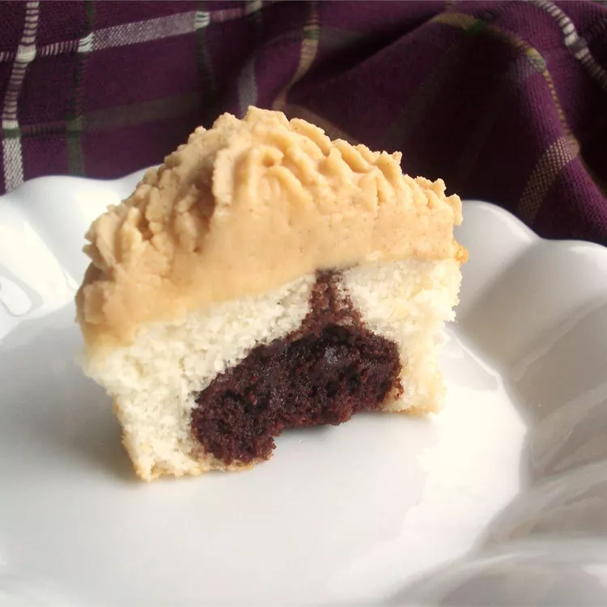

Cupcake Recipe

Description
This is the best cupcake you will ever make! It is simplp, easy, and most imporsantly delicious!
Ingredients
Brownie Batter
- 1 (18 ounce) package brownie mix
- 2 large eggs
- ½ cup canola oil
- ¼ cup water
Cake Batter
- 1 (15.25 ounce) package white cake mix
- 1 ⅓ cups water
- 3 large white eggs
- 2 tablespoons canola oil
Steps
- Preheat the oven to 350 degrees F (175 degrees C). Line 48 muffin cups with paper liners.
- Make brownie batter: Whisk together brownie mix, eggs, oil, and water in a large bowl until fully incorporated, about 50 strokes. Set aside.
- Make cake batter: Beat cake mix, water, egg whites, and oil in a separate bowl with an electric mixer on low speed until combined. Increase speed to medium and beat for 2 minutes.
- Spoon brownie batter into the prepared muffin cups, about 1/3 full. Spoon cake batter over brownie batter until each muffin cup is about 2/3 full.
- Bake in the preheated oven until golden and the tops spring back when lightly pressed, about 20 minutes.
Back to index